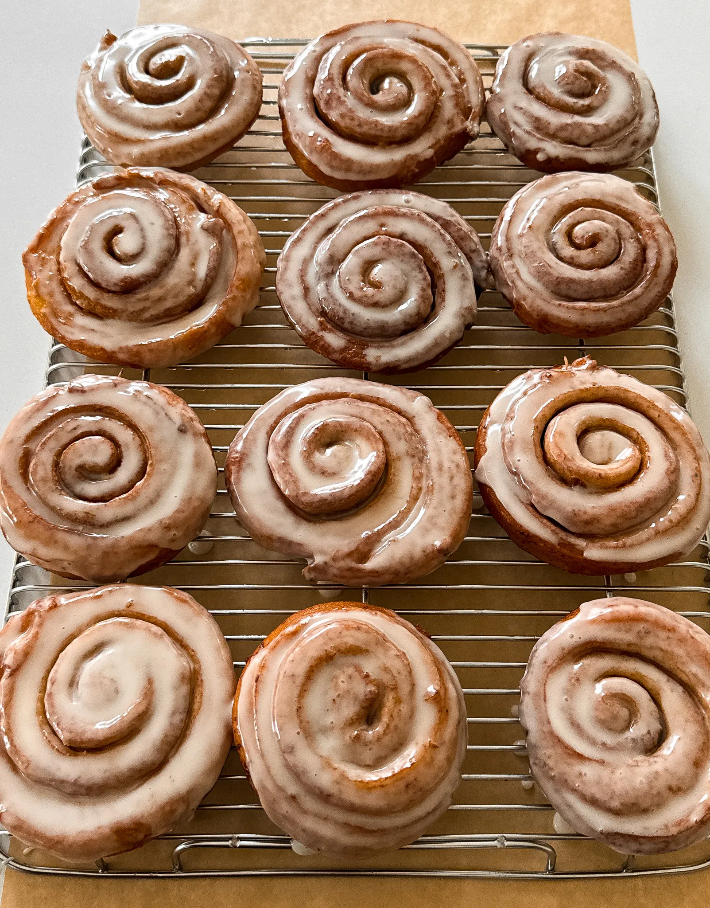

DESSERT
Cinnamon Roll Donuts
PREP TIME: 2 HOURS
COOK TIME: 30 MINUTES
TOTAL TIME: 3 HOURS
YIELDS: 18 DONUTS
Cinnamon rolls meet donuts for the ultimate dessert collab of two
delicious treats! These pillowy-soft donuts are infused with warm
buttery cinnamon goodness and perfectly glazed for an irresistible
finish. They’re guaranteed to fill your kitchen with the sweetest
most indulgent aroma!
JUMP TO RECIPE
Cinnamon Roll Donuts
Cinnamon rolls meet donuts for the ultimate dessert collab of two
delicious treats! These pillowy-soft donuts are infused with warm
buttery cinnamon goodness and perfectly glazed for an irresistible
finish. They’re guaranteed to fill your kitchen with the sweetest
most indulgent aroma!
I got the inspiration for this recipe from Krispy Kreme donuts
because they sell cinnamon rolls on their menu except they are made
with exactly the same dough as their original classic donuts.
However, these are rolled and swirled with cinnamon sugar filling.
I knew I had to recreate it at home and even better so let’s get
into it!
Preparing the Filling
Before diving into the dough, let’s get our filling ready.
In a small bowl, combine light brown sugar and cinnamon to taste.
The butter will not get mixed in – it will be spread on directly to
the rolled-out dough. Set this aside for later use.
DESSERT
Cinnamon Roll Donuts
PREP TIME: 2 HOURS
COOK TIME: 30 MINUTES
TOTAL TIME: 3 HOURS
YIELDS: 18 DONUTS
Cinnamon rolls meet donuts for the ultimate dessert collab of two
delicious treats! These pillowy-soft donuts are infused with warm
buttery cinnamon goodness and perfectly glazed for an irresistible
finish. They’re guaranteed to fill your kitchen with the sweetest
most indulgent aroma!
Ingredients
DONUT DOUGH
- 4 cups all-purpose flour
- 1 1/4 cup whole milk, warm
- 1 1/2 teaspoon instant yeast
- 1/3 cup granulated white sugar
- 1 teaspoon salt
- 1 large egg, room temperature
- 6 tablespoons unsalted butter, softened
- vegetable oil, for frying
FILLING
- 1/2 cup unsalted butter, room temperature
- 1 1/4 cup light brown sugar
- 3 tablespoons cinnamon
ICING
- 2 cups powdered sugar
- 1/4 cup whole milk
- 1 teaspoon vanilla extract
Instructions
PREPARE THE FILLING
-
In a small bowl, mix together brown sugar and cinnamon.
Set aside.
MAKE THE DOUGH
-
To a large mixing bowl, add the warm milk, and instant yeast.
Whisk together until dissolved.
- Then add the sugar, salt, egg, butter, and flour.
-
Combine together using a hook attachment and stand mixer or a
wooden spoon/rubber spatula. Knead the dough for about 3 to 4
minutes and then transfer to an oiled bowl.
-
Cover, and place in a warm place to rise about
1 hour to 1 hour and a half.
MAKE THE ICING
-
To a wide bowl, add the powdered sugar, whole milk,
and vanilla extract.
- Whisk together very well until smooth and creamy.
SHAPE AND FRY
-
Once the dough has risen, flour a working surface and roll out
the dough with a rolling pin into a large rectangle until it is
about a little less than 1/2 an inch thick and 14 by 20 inches
in width and length.
-
Add the softened butter on top of the dough and use a rubber
spatula to spread the butter into an even layer across
the dough.
-
Sprinkle the brown sugar and cinnamon mixture over the butter
and press it down firmly.
-
Roll it up tightly into a log and pinch the ends together very
tightly.
-
Cut the dough into about 3/4 inch slices to end up with about
16 to 18 pieces. Transfer each roll to an individual parchment
paper cut into a small square and place on a baking tray.
-
ptional, for flatter donuts, smash each roll down a bit. For
thicker donuts, leave as is.
-
over and allow it to proof again for about 45 minutes to an
hour.
-
Heat oil suitable for frying in a pot or deep pan like
vegetable, canola, or peanut oil. The perfect temperature
is around 325°F to 350°F.
-
Transfer 3 to 4 donuts into the hot oil, making sure not to
crowd them. Fry on each side until beautifully golden, flipping
over halfway.
- Transfer to a wire rack to drain the excess oil.
-
If the icing has hardened, heat in the microwave for 15 to 30
seconds.
-
Dunk each donut in the icing, let any excess drip, and place it
back on the wire rack to settle.
-
After 5 minutes and the icing has hardened to the touch,
enjoy warm!